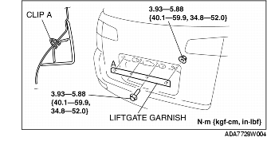

Liftgate garnish removal/installation 1. Remove the bolts. 2. Remove the liftgate trim. 3. Remove the nut. 4. Disengage clip A from the body by squeezing it from inside of the vehicle, and remove the liftgate garnish. 5. Install in the reverse order of removal.